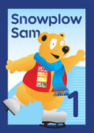
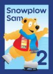
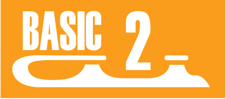
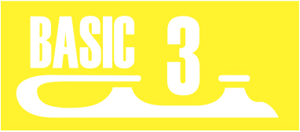
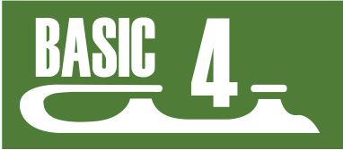
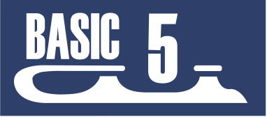
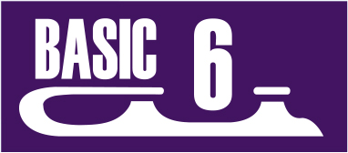

Snowplow Sam
Ages 3-5
Designed to teach the basics to young children

- Sit down and stand up in skates (off ice)
- Sit down and stand up in skates (on ice)
- March in place
- March forward (8-10 steps)
- Two-foot glide
- Dip in place

- March followed by long glide
- Dip while moving
- Backward wiggles (6 in a row)
- Rocking horse
- Forward swizzles (2-3 in a row)
- Two-foot hop in place
- Forward skating (8-10 steps)
- Forward one-foot glide (Both feet)
- Forward swizzles (4-6 in a row)
- Backward swizzles (4-6 in a row)
- Forward snowplow stop
- Curves
Basic Skills
Ages 6+
Designed to teach the basics to school aged children
- Sit on ice and stand up
- March forward across the ice
- Forward two-foot glide
- Dip
- Forward swizzles (6-8 in a row)
- Backward wiggles (6-8 in a row)
- Beggining snowplow stop
- Two-foot hop in place

- Scooter pushes (Both feet)
- Forward one-foot glides (Both feet)
- Backward two-foot glide
- Rocking Horse
- Backward swizzles (6-8 in a row)
- Two-foot turns in place
- Snowplow stop
- Curves

- Forward stroking
- Forward pumps on a circle (6-8 in a row)
- Moving two-foot turns
- Beginning backward one-foot glide (Both feet)
- Backward snowplow stop (Both feet)
- Forward slalom
- Forward pivots (Both directions)

- Forward outside edges on a circle
- Forward inside edges on a circle
- Forward crossovers
- Backward pumps
- Backward one-foot glides (Both feet)
- Beginning two-foot spin
- Forward lunges

- Backward outside edges
- Backward inside edges
- Backward crossovers
- Forward outside three-turn (Both feet)
- Advanced two-foot spin (4-6 revolutions)
- Hockey stop (Both directions
- Side toe hop (Both feet)

- Forward inside three-turn (Both feet)
- Backward two-foot turns (Both directions)
- Backward stroking
- Beginning one-foot spin (2-4 revolutions)
- T-stops (Both feet)
- Bunny hop
- Forward spirals (Both feet)
- Shoot the duck